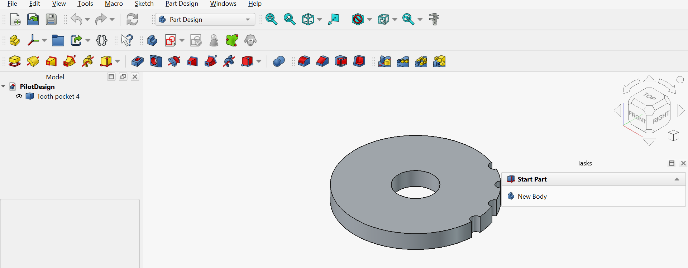
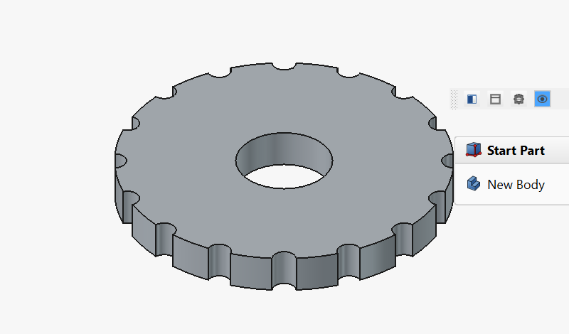
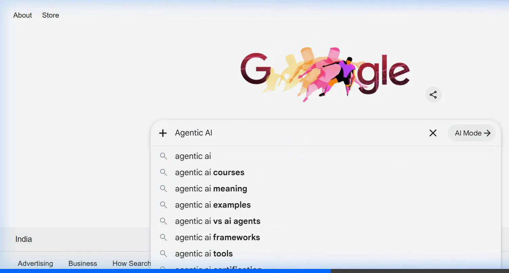

NEW RESEARCH PAPER
AI agents say “done”
too early.
We built one that has to prove it. A local AI agent that checks the screen before it reports success.
THE PROBLEM
Every action worked.
The task didn’t.
Most agents let the model decide when it is finished. So they stop early, and report success anyway.
task: search Google for “electric cars”
✓ open google.com
✓ click the search box
✓ type “electric cars”
✗ query never submitted
agent › “Task complete!”
FALSE “DONE”
Example modelled on a held-out test state from the paper (case G6).
THE AGENTIC LOOP
Done only when the page proves it
The gate
6 rule checks on the real page: errors, search page, query, typed text, answer, steps left
Evidence
Every decision is stored with the screenshots and values it used
DEMO · PROMPT TO CAD
One sentence in.
A CAD model out.
“Design a chain sprocket: a 70 mm diameter, 8 mm thick disc with a 20 mm central bore and sixteen 5 mm semicircular tooth pockets…”
FreeCAD · building

Finished model

BOUNDING BOX69.82 × 69.82 × 8 mm
BUILD TIME45.7 s
EXPORTSFCSTD · STEP
Screens from a demonstration run, 17 Nov 2026. Illustrative; not an evaluated result.
DEMO · REAL BROWSER
It drives a real browser
Opens the page, types, reads the result. Then checks the page before saying it is done.
2 · type the query

3 · read results → gate check
Frames from the recorded demo in the project repository.
WHAT WE MEASURED
Cheap to check.
Hard to fool.
9/22
false “done” claims blocked
on test cases frozen before testing
1/20
good results wrongly blocked
low cost in false alarms
27 ms
per check
no model call, zero tokens
p=.021
vs. trusting every claim
exact McNemar test
Component-level results on constructed test states. Not yet significantly better than an error check alone (p = 0.070).
LOCAL-FIRST
Local-first by default
The model client only talks to a model server on this machine. Screens and prompts are not sent to the cloud.
YOUR COMPUTER
⇄
🧠
Local model
Ollama · 127.0.0.1
555/555
connections stayed on 127.0.0.1 in 70 test episodes
Paper + code (MIT) →
github.com/sudeshsudhii/Agentic-pilot-local